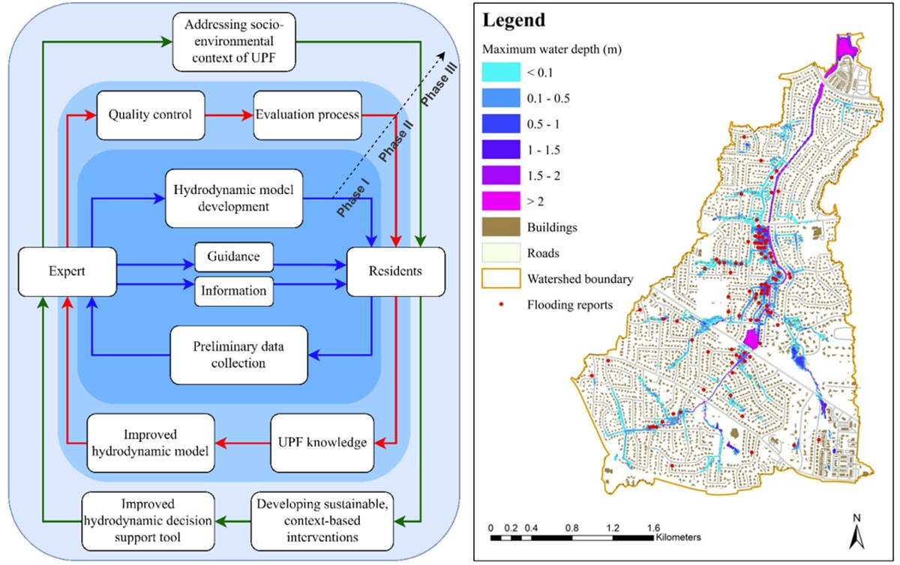

Climate risk & urban flood dynamics
Where floodwater actually goes in a city, how well drainage infrastructure performs, and how the resulting burden — damages, insurance gaps, unmet need — is distributed across neighbourhoods.
Urban Hydrosystems & Resilience Lab
We study how drainage systems, household decisions and the agencies that govern them interact to determine who is protected from flooding and who is not. The lab is based in the Department of Civil and Architectural Engineering at Tennessee State University, and works in Nashville, across the U.S. Gulf Coast, and nationally.

What we study
Flooding, water affordability and green infrastructure are usually studied separately. We treat them as parts of the same system, because the mechanisms that decide outcomes — drainage capacity, who can afford to act, and which agencies talk to each other — cut across all three.
Where floodwater actually goes in a city, how well drainage infrastructure performs, and how the resulting burden — damages, insurance gaps, unmet need — is distributed across neighbourhoods.
Whether households adopt rain gardens and other green stormwater practices, what that depends on, and how conservation and affordability goals trade off against each other in utility policy.
How the organisations responsible for flood risk actually coordinate, what residents know that models do not, and how to turn both into evidence planners can use.
Questions we have worked on
Conservation policy is usually evaluated on water saved. We modelled the same programmes against affordability outcomes to expose where the two goals reinforce each other and where they pull apart. Read the paper.
We combined household survey responses, parcel-level feasibility, census data and flood-hazard maps to test how well adoption lines up with exposure — the assumption on which distributed stormwater programmes rest. Read the paper.
Using interviews, surveys and network analysis across Southeast Texas, we mapped which organisations actually coordinate on flood preparation and response, and located the structural gaps in between. See all publications.
How we work
Each stage feeds the next, and the last one feeds back into the first. Community knowledge and agency practice enter early, not as an afterthought at the end.
Map where hazard, infrastructure condition and social vulnerability overlap.
Use socio-hydrology, behavioural theory and network governance to say why.
Simulate feedbacks between behaviour, institutions and infrastructure over time.
Turn the results into maps, tools and evidence agencies and residents can act on.
News
A one-year award from the CHDT University Transportation Center supports work on how flooded roads disrupt access to critical services across Nashville.
Coupled human–environmental systems: socio-behavioural and spatial dynamics in green stormwater infrastructure adoption, with Garcia, Niyogi and Bixler.
Koorosh Azizi joined the Department of Civil and Architectural Engineering as Assistant Professor and founded the Urban Hydrosystems & Resilience Lab.
Prospective students
If you are interested in urban flooding, hydrologic modelling, GIS, stormwater infrastructure, or the institutions that govern water, the Join Us page explains what is available, what background helps, and exactly how to get in touch.